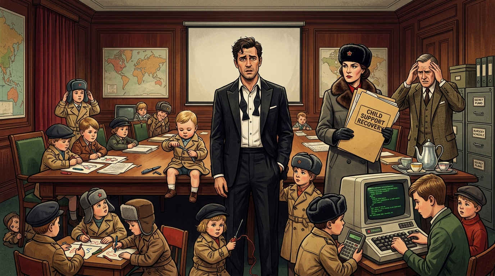

FROM RUSSIA WITH EXPECTATION.
Jamie Fond (codename 009½), seventeen unexpected prodigies, and the ultimate Cold War diplomatic reckoning at MI6.

“He shouted that Jamie had fathered seventeen children with foreign agents during the Cold War. Jamie said he had been building international relations. Hawthorne replied that he had been building a crèche.” — Trevor Swistchew
MI6 Case File: Fond, Jamie (009½)
Espionage Tropes & Geopolitical Maintenance AnalysisDeconstructing the Cold War Lothario
Ian Fleming's literary and cinematic mythos established the globetrotting secret agent as an unattached, consequence-free operator whose intimate "cooperative working relationships" with opposing foreign operatives dissolved cleanly at the mission's conclusion. Trevor Swistchew's satire flips the trope on its head by introducing the one adversary MI6 cannot out-manoeuvre: statutory child support enforcement backed by seventeen genetically undeniable prodigies skilled in wire-tapping, lock-picking, and Soviet command.
Jamie Fond—codename 009½—was practising his signature smoulder in the mirror when the doorbell rang.
He opened it to find two officials in grey suits, the sort of men who looked as if they had been carved from filing cabinets.[1]
They introduced themselves from the International Child Support Recovery Directorate and handed him a folder so thick it could have been used to prop up the Berlin Wall. Inside were seventeen files, each stamped URGENT, each containing a photograph of a child who looked unmistakably like him. Same jawline. Same eyebrows. Same faint expression of “I could escape this room with a paperclip.”
The officials explained that during his Cold War service, he had “formed cooperative working relationships” with agents from Russia, East Germany, Bulgaria, Czechoslovakia, and—mysteriously—Finland.[2] Jamie protested that he had only been in Finland for twelve minutes during Operation Snow Ferret. The officials replied that it had apparently been a very productive twelve minutes. They informed him that the youngest child, aged two, belonged to Hedda Legova, a top Soviet operative. Jamie remembered her vividly: she had once tried to strangle him with a telephone cord. The officials said she claimed he had “extracted information” from her. Jamie insisted it had been strictly professional. The officials disagreed.
MI6 summoned him immediately. Director Hawthorne paced the briefing room like a man who had just discovered his pension was invested in East German sausages. He shouted that Jamie had fathered seventeen children with foreign agents during the Cold War. Jamie said he had been building international relations. Hawthorne replied that he had been building a crèche. The screen lit up with photos of the children: one dismantling a radio, one picking a lock on a biscuit tin, one crawling through an air vent. Hawthorne informed him that the mothers were sending the children to MI6 “for bonding”. He added that this was their joke, not his.
The children arrived in a convoy of diplomatic cars. The oldest, a 16‑year‑old named Yuri Sterlingov, saluted Hawthorne and immediately hacked the building’s security system using a pocket calculator. A 10‑year‑old East German girl demanded blueprints of MI6 “for homework”. A Bulgarian boy dismantled Jamie’s pen, identified the hidden explosive, and asked for two more “for school”. The two‑year‑old marched up to Jamie, grabbed his tie, and declared “Papa” with the authority of a Soviet general.
MI6 convened an emergency summit with representatives from the various nations.[3] The Soviet delegate, a woman with cheekbones sharp enough to slice bread, said, “Comrade Fond was very productive during Cold War. We expect compensation.” Hawthorne snapped that Jamie was not a comrade. She replied, “He was. Repeatedly.” Jamie inhaled his tea. The East German delegate demanded funding for elite gymnastics, elite mathematics, elite espionage, and shoes. The Bulgarian delegate simply said, “We want money, maybe a tank.” The Finnish delegate shrugged and said they didn’t know how it happened either, but they would accept payments. Jamie attempted diplomacy. All delegates shouted “NIET (No)!” in unison. Even the Finnish one.
Realising negotiations were hopeless, Jamie did what any seasoned operative would do: he ran. He sprinted through MI6, dodging toddlers, leaping over prams, pursued by seventeen highly trained children shouting “Papa!” in six languages. He burst onto the roof where a helicopter waited. He leapt aboard. The pilot turned. It was the two‑year‑old. He handed Jamie a bill for childcare.
Field Note Discovered on Hawthorne’s Desk:
“Gone undercover. Very deep cover. Possibly forever. If anyone asks, tell them I’ve defected to Bermuda. — 009½”
The next morning, Hawthorne found the note on his desk. Hawthorne sighed, then opened the latest diplomatic cable.[4] It read: “We have discovered an eighteenth child.” Hawthorne fainted.
© 2026 Trevor Swistchew. All rights reserved.